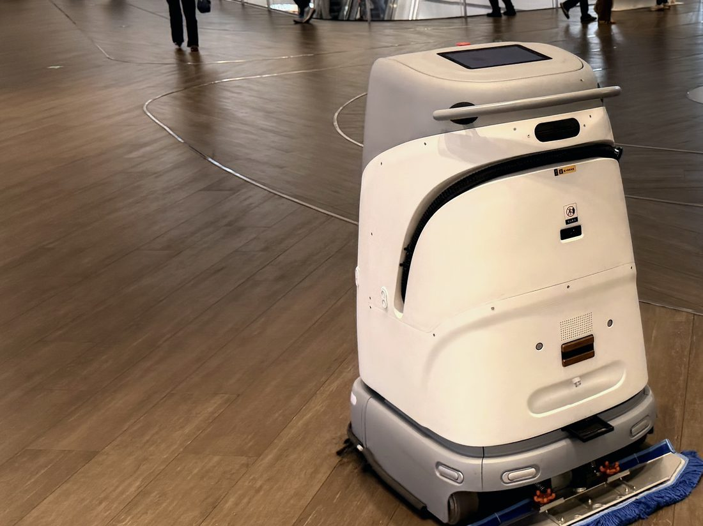
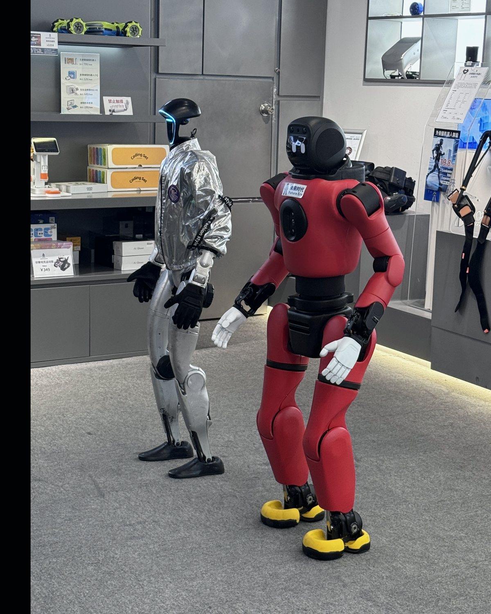
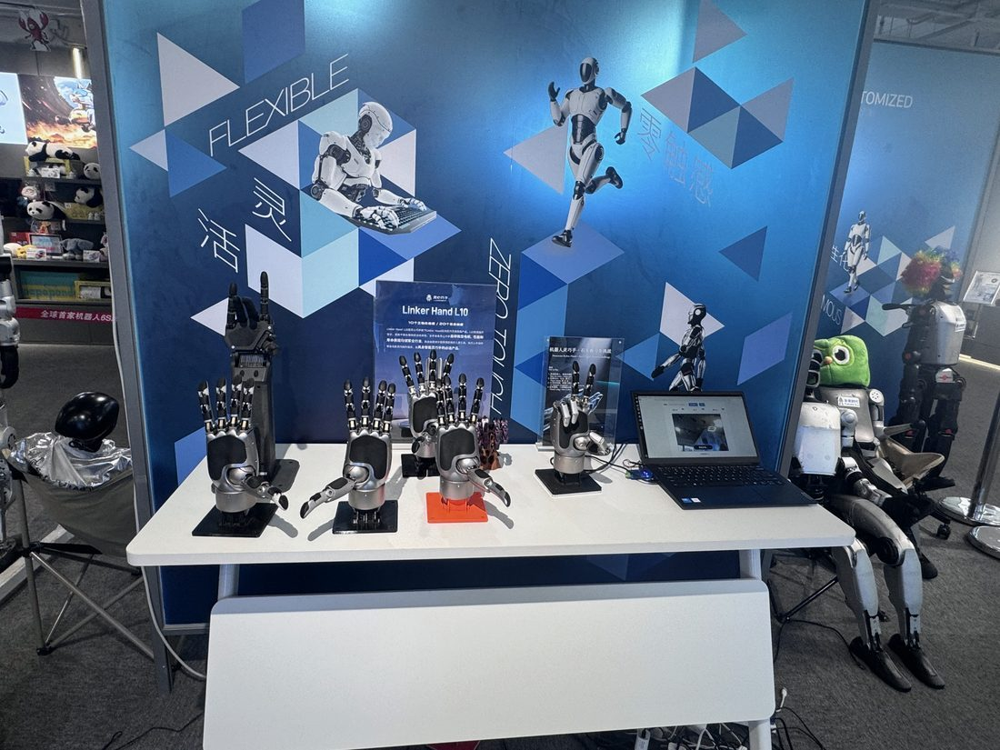
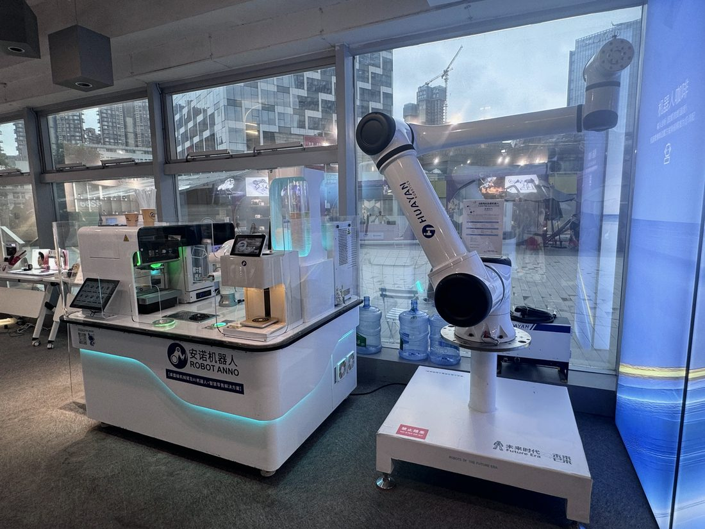
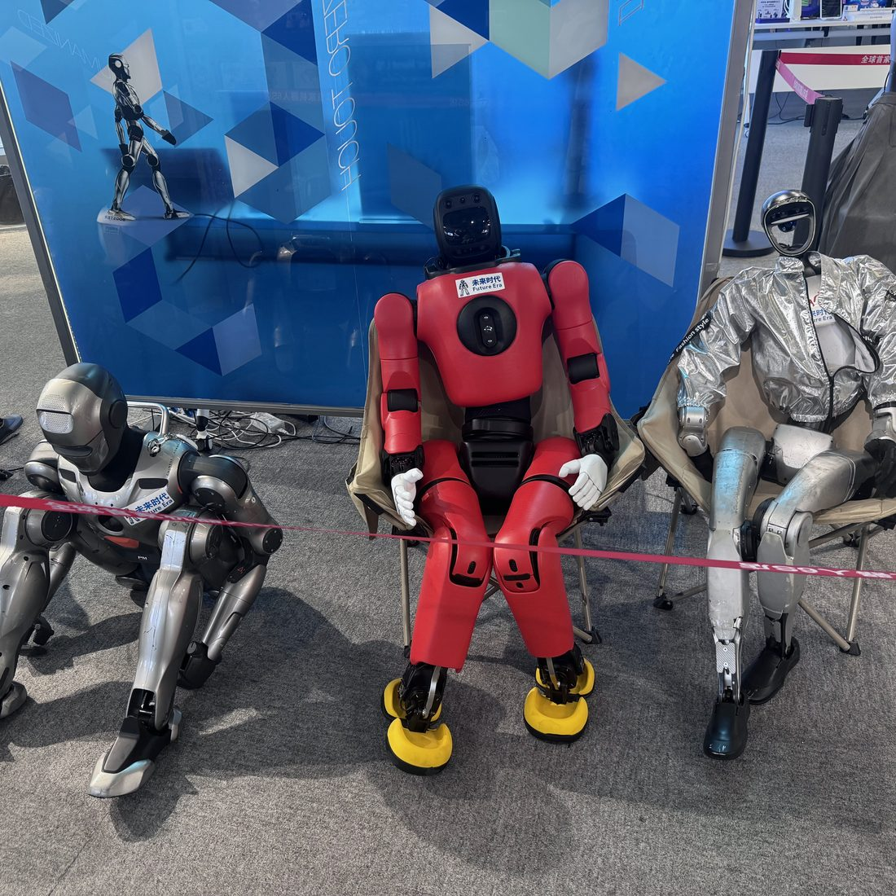

Hardware hype
Form factors dominate headlines while value migrates to orchestration, service contracts, data, and deployment intelligence.
ROBOTICS MARKET INTELLIGENCE · CHINA FIELD ACCESS · STRATEGIC ADVISORY
Field-grounded research, senior advisory, and curated access across China's fastest-moving robotics ecosystem — written for decision-makers who cannot afford second-hand insight.
THE POSITION
ROBOFRONT Intelligence is built to be that layer — independent, field-grounded, and priced for decisions, not for clicks.
WHY THE LAYER IS MISSING
Form factors dominate headlines while value migrates to orchestration, service contracts, data, and deployment intelligence.
The decisive signals appear first in Mandarin — on showroom floors, in supplier networks, in provincial policy corridors.
Generic research is too broad, trade media too shallow, vendor decks structurally biased. Decisions need an independent field layer.
FUTIAN CBD, SHENZHEN · ROBOFRONT FIELD PHOTOGRAPHY · 06.2026
FIELD EVIDENCE





THE FRONT BRIEF
Deployments, funding, policy, pricing, and field observations — concise, sourced, and free.
Working humanoids now sell off shop floors in Huaqiangbei — observed and priced on site.
Chinese humanoid exports tripled in a single quarter; total robot exports reached RMB 11.3B.
8,500 AI-driven robots to deploy across 26 regions — infrastructure-scale procurement has begun.
FIELD ARCHIVE
ALL FRAMES · ROBOFRONT ORIGINAL FIELD PHOTOGRAPHY · NO STOCK, NO GENERATED IMAGERY
INTELLIGENCE PRODUCTS
The signal newsletter on deployments, funding, policy, and company moves.
Subscribe →Structured brief on shipments, manufacturers, pricing, and deployment signals.
Start a trial →Long-form reports on humanoids, embodied AI, supply chains, and category leaders.
Request access →Board-ready notes, diligence support, and strategic positioning for capital decisions.
Request briefing →ADVISORY · DELEGATIONS · ACCESS
Market entry, custom diligence, supplier scouting, thesis validation — and curated, application-only field access to the Shenzhen ecosystem: showrooms, expos, suppliers, introductions.
INDEPENDENT BY DESIGN
No equity in covered companies.
No pay-to-cover relationships.
Sponsored work disclosed and editorially controlled.
Professional use only — not investment advice.
BEGIN
ROBOFRONT INTELLIGENCE
{kind=link}
{kind=link}
{kind=link}
{kind=link}
{kind=link}
{kind=link}